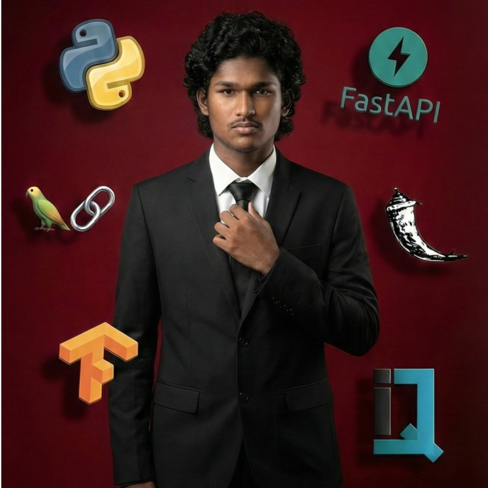

01 / COMPUTER VISION↗
WelVision
Industrial defect detection with optimized object detection and model-assisted labeling.
40%lower inference latency
SOFTWARE ENGINEER · COIMBATORE, INDIA
I’m Raghunandhan, a Software Engineer at Protecto.ai. I work on backend engineering, AI/ML, and agents—with curiosity at the center of it all.

01 / SELECTED WORK
Real problems. Measurable outcomes.
Industrial defect detection with optimized object detection and model-assisted labeling.
Automated grade computation from result PDFs, used by more than 1,000 students.
02 / CURRENT CHAPTER
SEPTEMBER 2026 — PRESENT
Working on backend engineering, AI and machine learning, and AI agents.
03 / SAY HELLO
Interesting problems, collaborations, or a conversation.